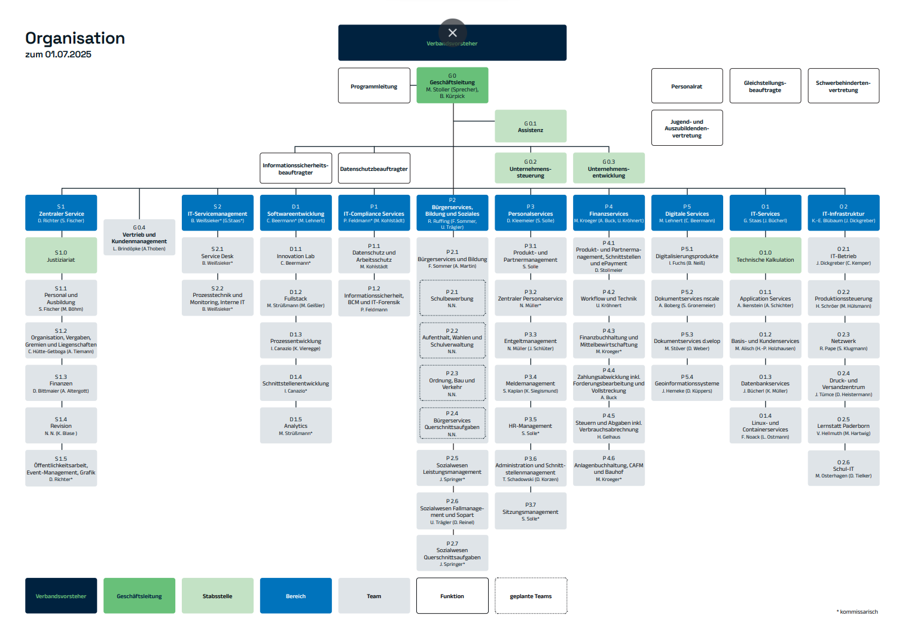

Was ist OWL IT?
OWL IT bedeutet Ostwestfalen Lippe IT, wurde 2020 gegründet und betreut vor allem öffentliche Verwaltungen. Das Unternehmen arbeitet kostendeckend, d.h. es ist darauf aus, kollektive Bedürfnisse zu befriedigen, und nicht den Gewinn zu maximieren. Hier drei Ziele der OWL IT:
- Betrieb einer sicheren IT-Infrastruktur (Rechenzentrum, Netze, Sicherheit)
- Bereitstellung von Fachanwendungen für kommunale Verwaltungen (Software, Verfahren)
- Beratung, Schulung, Installation, Wartung und Support von IT-Systemen für die Mitgliedskommunen.
Es gibt keins, da es ein kommunaler Zweckverband und somit eine Körperschaft des öffentlichen Rechts ist.
Betrieb
Mein Praktikum fand in der OWL IT, einem kommunalen Rechenzentrum in Lemgo, statt. Das Unternehmen entwickelt moderde und cloudbasierte Software-Lösungen nach Bedarf der staatlichen bzw. gemeinwirtschaftlichen Unternehmen (wie z.B Agentur für Arbeit, Krankenhäuser, Stadtwerke etc).
Früher hieß die Firma übrigens "KRZ", was nämlich den Unternehmenszweck widerspiegelte. Die Arbeitszeiten sind flexibel, du könntest um 8, 9, 10 Uhr kommen oder auch von Home-Office aus arbeiten. Der Tagesablauf sieht aus wie folgend:
- circa 09:00-09:15 Uhr - Daily (tägliches Meeting mit Kollegen)
- 12:00-13:00 Uhr - Mittag
- 15:00 Uhr - Schluss (für mich als Praktikant)
- 16:00+ Uhr - Schluss für Kollegen
Nun ein Paar Worte über das Team. Mein Team bestand aus 4 Leuten (Fullstacks), das sind diejenigen, die grundsätzlich alles machen können, was Entwicklung angeht (Frontend, Backend, Datenbanken, Projektführung etc.). Insgesamt beträgt die Anzahl der Mitarbeiter der Firma mehr als 500 Leute. Sehr nette und hilfsbereite Kollegen, guter Umgang und Verständnis herrscht im Betrieb, wunderbare Umgebung.
Aufbau
Nun möchte ich einmal den Aufbau beziehungsweise die Hierarchie des Unternehmens ganz kurz angehen, und zwar habe ich ein Organigramm dazu vorbereitet:
Anhand dessen wird klar, wie die Hierarchie aufgebaut ist und wer für welche Funktion zuständig ist.